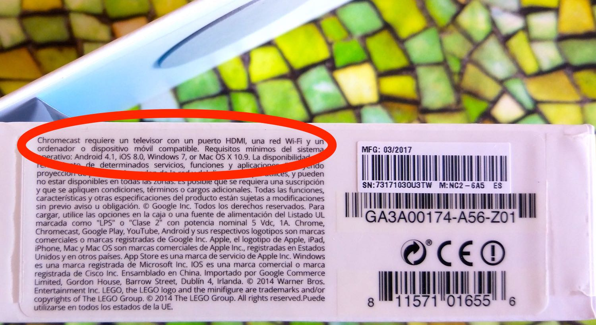

Rants from the Ballmer Peak 
Chromecast without internet is the Shitcast
Summer is one of those times of the year technical savvy people need to step away from their usual hardware devices or face being labelled geeks, nerds, autists, aspergers, freaks, or whatever the hip word is among the non technical people. Writing software on the computer or teaching yourself new stuff at home is bad. On the other hand, risking skin cancer and cirrhosis at the beach while forwarding stale memes with privative messaging apps is cool.
Visiting my parents far away from civilization for a week I wanted to test this thingy called Chromecast, sold by Google in supermarkets. It's a cheap computer/Android streaming receiver you connect to a screen. My parents like watching low quality videos of old memes sent through WhatsApp, but prefer to do so on a big screen rather than their small phones, so I thought of bringing it along some downloaded stuff.
The experiment
Of course I tested the Chromecast first at home. The setup went really smooth, and even when I tried to switch WiFi networks or in general try to mess with it, my Android phone would always be able to connect to the Chromecast and reset it or configure it to join a different network. The setup consists of a simple wizard tutorial you watch on the TV. The quality of the streamed image is a little bad though. Using a 5 GHz network showed visible compression artifacts with Full HD (1080p) content. It is certainly true that the streaming is nearly immediate, but I would gladly accept buffering for a minute if I could at least keep the quality I have on the desktop/phone. The device is cheap since it has no user available storage, it's all streaming or nothing.
Worse than that, the device seemed incapable of displaying landscape 60fps content. The only way I could manage to get 60fps was when I streamed a vertical kpop fancam, whose visible area requires only one third of the bandwidth compared to the full landscape picture area. 60fps landscape videos were always mangled down to 30fps, either from the Chrome browser (freshly updated/reinstalled) or even from media center software like Plex. That pretty much explains why the 4k Chromecast device subtly offers a hardware Ethernet connection option, since you likely won't get fluid 4k content on any WiFi. The technical spec mentions special WiFi beamforming hardware might be needed to achieve such gargantuan screen resolution, but I wonder if such a thing exists outside of some fancy Google lab environment. However my parents' eyes won't mind the lower artifact version with frame drop, so I didn't worry much. Also, certain videos had a visible audio delay, and Chrome had troubles playing many of the 60fps .mkv files which ironically had been downloaded from Youtube earlier for offline caching: they played but stuttered visually, as if displaying the frames in the wrong order, 1 3 2 5 4… instead of 1 2 3 4 5…, making everything unwatchable. But that seems more of a Chrome browser issue issue.
Before holidays I went to a friend to show off the Chromecast, since he had heard about it and was interested in seeing how it performed. Again, once you run Google's Home application on a WiFi phone the Chromecast is easily configured to get the new password and join the network. Looking around the play store we even found an app named Rakuten Viki which offered streaming Korean dramas with Spanish subtitles. The alcohol joining us met the required standards so we tried the first chapter of Strong Girl Do Bong Soon. This drama goes about a weird fiction lineage of herculean strength Korean women. Despite their looks, such women are so strong that even a handshake or a pat in the back could break your bones. More importantly, the strength comes with a severe requirement: you can't use it for your own personal advantage. If you do, you get pimples on your face and lose the strength, transforming forever into a normal woman to never again enjoy (or suffer!) super strength.
The drama follows the life of Do Bong Soon (actress Park Bo Young) who is the failure daughter of a former weight lifting champion aggressive woman who lost her strength while bullying others in… something that looked like college. Or maybe Koreans in the old days wore school uniforms everywhere? Her bullying continues despite the lack of strength though. Park Bo Young is an insanely cute and comedic fit for the main actress, since she is terribly small and non intimidating. Her profile page says she's 158cm and 41kg. The weight might be all right, but the height is certainly out of proportion. My friend pointed out that on a scene where she was hesitantly waiting before a door, the knob was nearly the same height as her shoulders. She's either a hobbit or the director wanted to display her as one and asked to build a special giant door. I hope it's the former but without the ugly feet.
Park Bo Young tries to live as a normal person, always hiding her true power to avoid others from noticing her, but of course this is pretty much impossible, since she seems to be lawful good. The first chapter shows how she doesn't even break a sweat dealing with some gangsters blocking a road and harassing a bus driver willing to pass through. A rich young man is witness to the situation and calls the police before he sees a comedic fight where each gangster is dealt a hand of broken bones, one of them nearly visiting the International Space Station. Later the rich guy decides to intervene at the police station to lie about Do Bong Soon's strength (pointed out by small children watching from the blocked bus on the road), managing to keep her away from jail, and later contracting her as a personal bodyguard.
The whole ~1h chapter was streamed from the mobile phone lying on the table and it still seemed to have enough juice to go through a second chapter without plugging it in, which looked like an impressive feature for a not fully charged device. Hardware video compression is pretty amazing these days, even in cheap Chinese phones. Before packing to my parents I dusted off an old WiFi router and made the Chromecast join its network. Later, away from civilization, my friend texted me to tell the rest of the drama was fun (except the last superfluous chapter). Alas, I had my own drama to experience.
The drama
After arriving and selling the wonders of the Chromecast to my parents I proceeded to plug in the device to their TV and turn on the WiFi router. The device powered up, connected to the WiFi and displayed the same message I saw before leaving civilization: the connected WiFi doesn't have internet access. Well, duh, that's the idea, right? Of course the device would display this since it shows random wallpaper pictures when nothing is being cast to it. But now other Android devices on the network wouldn't display the "cast to device" icon, which was worrisome. Entering Google's Home app displayed the available device and an ominous message: this device needs to be configured. What the hell Google? I went several times through the set up process and every time the setup halted at the very last moment: the Chromecast must phone home and refuses to work unless it connects somewhere for some unknown purpose. It's not even updates, since a few days ago it had been updated and online on an Internet connected WiFi at home.
"ShitCast" is connected to mini chrome, but doesn't have internet access.
The solution to patch this horrible design decision was to create a WiFi on my phone with data connection and let the Shitcast join it, as well as other mobile phones. Then, once the Shitcast is happy (it takes less than a second to go through that last inconvenient step iff you have internet), turn off mobile data to avoid idiotic wallpapers and updates siphon the data cap, but keep the WiFi on. After some seconds the pretty online wallpapers disappear and you get again the Screen Of Fuck Off You Third World Citizen Without Internet Access (or SOFOYTWCWIA for brevity), but fortunately once the Shitcast has been able to phone home you are able to stream locally to it even without internet connectivity.
Unless you plug the device off and turn it on again later. Then it displays those pretty wallpapers for a few seconds before showing again the SOFOYTWCWIA and disabling local network streaming unless you turn on Internet access again on and off on the phone. Kind of annoying the videos I wanted to stream were on the phone making the WiFi, and the Home app thinks it doesn't have WiFi access when you create one yourself… so I had to copy the videos to another phone. But why is the phoning home needed? Why does the device not even allow local streaming until it can phone the mother ship? Ah, wait, this is the privacy concerned company we are talking about, Google. Yeah, what a turn off, just like not being able to block internet access for mobile apps, because every app has to be able to show ads and phone home. Got it.
Connect the Chromecast to an HDMI port and join a WiFi network.

Chromecast requires a television with an HDMI port, a Wi-Fi network and a computer or compatible mobile device.
Still, I looked through the packaging and detailed description and there is nowhere to be found that the device requires internet access, it only says WiFi is required. How unfortunate of me to presume WiFi means WiFi without Internet access.
Conclusion
I paid 40 bucks for a Shitcast and all I got was this lousy rant. Also, don't live in a third world country where WiFi network could mean no internet access.